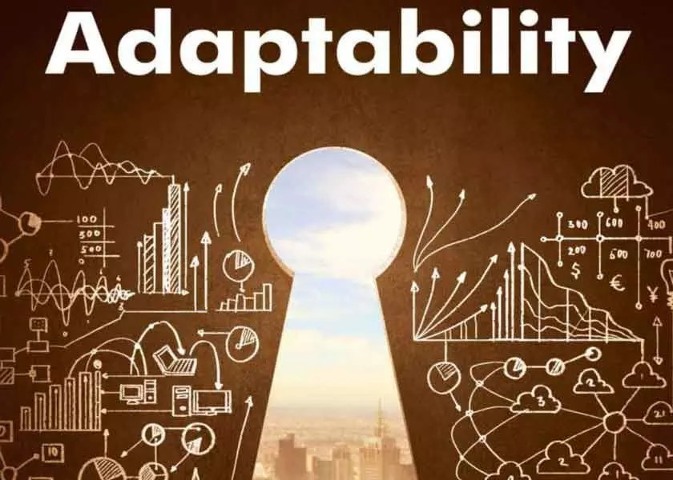

Education :
BTech in Computer Science Engineering
AISSMS IOIT, Pune
Expected Graduation: May 2027
Skills :
Time management
The ability to prioritize tasks, manage your schedule, and meet deadlines.
Problem Solving
The ability to determine the best way to approach a task, deal with conflict, and
handle project bottlenecks.

Adaptability
The ability to be flexible and adapt to new concepts and situations.
Programming Languages :


About Me :
- I am Atharva G Ingale, a Computer Science Engineering undergraduate pursuing my BTech degree from AISSMS IOIT, Pune, with an expected graduation in 2027. Passionate about problem-solving and technology, I have a solid foundation in programming languages such as Python, C, and C++, and I am currently expanding my expertise to include Java and JavaScript.
- With a keen interest in web development, I am focused on building my skills in HTML and CSS and exploring how technology can create impactful solutions. I thrive in collaborative environments and enjoy tackling challenges that require analytical thinking and creativity.
- I am committed to continuous learning and professional growth, aiming to contribute effectively to technical teams and innovative projects in the ever-evolving field of computer science.